NFR Evidence¶
How to read this page
Every section below was written by tests/nfr/report.py from the JSON a test produced. Nothing here is typed by hand. Each section shows what was measured and how, the result against the target, the distribution of the raw samples, a chart drawn from those samples, any screenshots, and links to the test source and the raw data files, so every number can be traced back to code without cloning the repository.
Totals: 46 pass · 0 fail · 2 pending (awaiting usability-study participants) · 1 informational · 1 not measured.
Where these numbers were measured¶
| Machine | Commit | Runner | Requirements |
|---|---|---|---|
| Darwin arm64, 8 cores | a088db842f |
local | 42 |
| Darwin arm64, 8 cores | f63bc74b70 |
local | 7 |
Measurements recorded between 2026-09-29T01:35:42+00:00 and 2026-09-29T22:17:55+00:00 (UTC).
Reference machine
SRS NFR1.1 sets the reference machine as a 4-core x86_64 laptop with 8 GB RAM. Numbers measured on a slower machine than that are conservative; numbers from a faster machine should be re-confirmed on the reference laptop before a demo.
NFR1 Performance¶
QR-03¶
Recognition p95 < 50 ms (rule) · SRS NFR1.1 · tactic: Pure-geometry classifier · PASS
| Metric | Target | Actual |
|---|---|---|
| p95 single-frame recognition latency (ms) | < 50.0 | 0.0038 |
How it was measured. RuleBaedRecognizer.intepret_gesture timed on every sample of the labelled dataset
| n | min | mean | p50 | p95 | p99 | max |
|---|---|---|---|---|---|---|
| 5837 | 0.0025 | 0.003 | 0.0029 | 0.0038 | 0.0041 | 0.2941 |
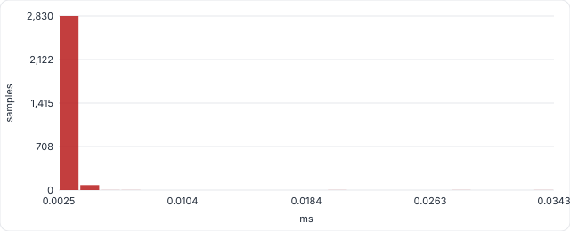
| Detail | Value |
|---|---|
frames |
5837 |
mean_ms |
0.003 |
Recorded 2026-09-29T22:16:53+00:00 on Darwin arm64, 8 cores · commit a088db842f (local) · JSON · raw samples CSV · test source
QR-25¶
Recognition p95 < 50 ms (ML) · SRS NFR1.1 · tactic: 63-feature MLP · PASS
| Metric | Target | Actual |
|---|---|---|
| p95 single-frame recognition latency, ML engine (ms) | < 50.0 | 0.1009 |
How it was measured. MLBasedRecognizer.interpret_gesture (feature extraction + MLP predict_proba + finger-state helper) timed on every sample of the labelled dataset.
| n | min | mean | p50 | p95 | p99 | max |
|---|---|---|---|---|---|---|
| 5837 | 0.0704 | 0.0822 | 0.0756 | 0.1009 | 0.1566 | 2.2528 |
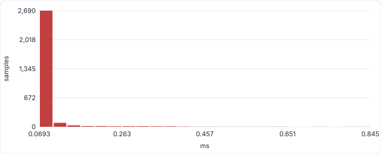
Recorded 2026-09-29T22:16:53+00:00 on Darwin arm64, 8 cores · commit a088db842f (local) · JSON · raw samples CSV · test source
QR-26¶
Hand detection p95 <= 100 ms, live · SRS NFR1.1 · tactic: MediaPipe lite model · PASS
| Metric | Target | Actual |
|---|---|---|
| p95 MediaPipe hand-detection time per frame, live at 30 fps (ms) | <= 100.0 | 14.393 |
How it was measured. MediaPipe Hands (model_complexity=0) timed on every 640x480 frame of real footage while the full pipeline, broadcast and 11 clients run. No hand is in the footage, so the palm detector runs on every frame (its slowest path).
| n | min | mean | p50 | p95 | p99 | max |
|---|---|---|---|---|---|---|
| 900 | 11.766 | 13.831 | 13.821 | 14.393 | 14.644 | 19.712 |
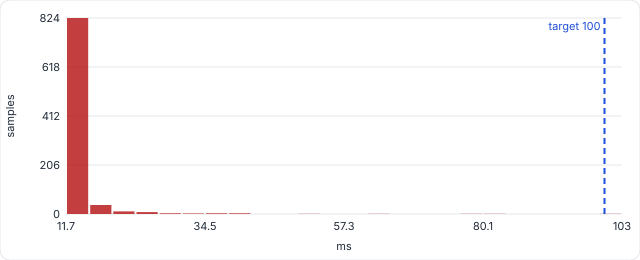
Recorded 2026-09-29T22:17:33+00:00 on Darwin arm64, 8 cores · commit a088db842f (local) · JSON · raw samples CSV · test source
QR-27¶
Frame serialization p95 <= 20 ms · SRS NFR1.1 · tactic: Encode once, fan out · PASS
| Metric | Target | Actual |
|---|---|---|
| p95 frame serialization for broadcast (JPEG + landmarks) (ms) | <= 20.0 | 1.129 |
How it was measured. serialize_event(include_frame=True) on real 640x480 frames with 1-2 hands: JPEG q60 encode, base64 and the pydantic model the WebSocket sends.
| n | min | mean | p50 | p95 | p99 | max |
|---|---|---|---|---|---|---|
| 580 | 0.707 | 0.889 | 0.846 | 1.129 | 1.738 | 2.695 |
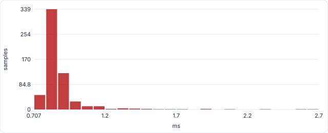
| Detail | Value |
|---|---|
mean_payload_kb |
55.3 |
Recorded 2026-09-29T22:16:55+00:00 on Darwin arm64, 8 cores · commit a088db842f (local) · JSON · raw samples CSV · test source
QR-28¶
Resolve + dispatch p95 <= 30 ms · SRS NFR1.1 · tactic: Dict command maps · PASS
| Metric | Target | Actual |
|---|---|---|
| p95 gesture payload -> command resolved and executed (ms) | <= 30.0 | 0.0103 |
How it was measured. GestureAdapter confidence gate, two-hand/one-hand resolution, stability hold and history log, then DroneAdapter.execute() on the dummy drone.
| n | min | mean | p50 | p95 | p99 | max |
|---|---|---|---|---|---|---|
| 2900 | 0.0029 | 0.0053 | 0.0041 | 0.0103 | 0.0342 | 0.186 |
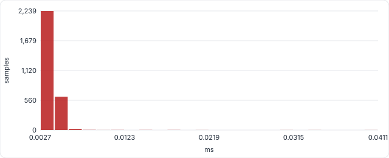
Recorded 2026-09-29T22:16:55+00:00 on Darwin arm64, 8 cores · commit a088db842f (local) · JSON · raw samples CSV · test source
QR-29¶
Frame -> drone command p95 <= 200 ms · SRS NFR1.1 · tactic: Bounded queue, one consumer · PASS
| Metric | Target | Actual |
|---|---|---|
| p95 frame timestamp -> command dispatched to drone (ms) | <= 200.0 | 15.925 |
How it was measured. Latency from CapturedFrame.timestamp to DroneAdapter.execute() returning, for every command the GestureAdapter emitted in a 30 s window at 30 fps. Includes queue wait, detection, ML recognition, stabilizer, JPEG encode, fan-out, adapter resolution and dispatch.
| n | min | mean | p50 | p95 | p99 | max |
|---|---|---|---|---|---|---|
| 858 | 13.308 | 15.347 | 15.326 | 15.925 | 16.343 | 21.136 |
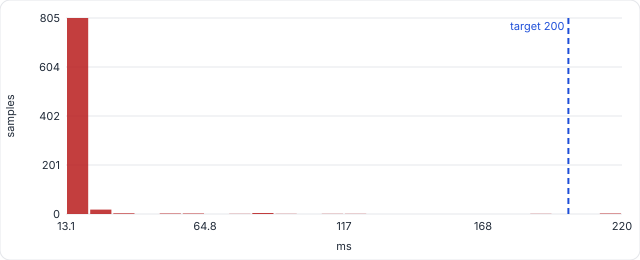
| Detail | Value |
|---|---|
commands_dispatched |
858 |
Recorded 2026-09-29T22:17:33+00:00 on Darwin arm64, 8 cores · commit a088db842f (local) · JSON · raw samples CSV · test source
QR-30¶
Gesture onset -> command p95 <= 200 ms · SRS NFR1.1 · tactic: 3-of-5 vote + 2-frame hold · PASS
| Metric | Target | Actual |
|---|---|---|
| p95 new gesture shown -> its command dispatched (ms) | <= 200.0, no missed gestures | 115.728 |
How it was measured. What the operator feels: time from the first frame showing a new gesture to its command reaching the drone. Includes the deliberate 3-of-5 stabilizer vote and the 2-frame adapter hold that suppress false positives (NFR3.2).
| n | min | mean | p50 | p95 | p99 | max |
|---|---|---|---|---|---|---|
| 30 | 114.838 | 115.35 | 115.295 | 115.728 | 117.024 | 117.024 |
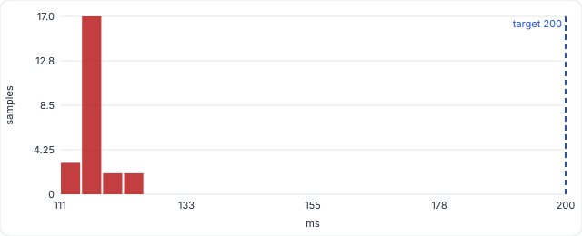
| Detail | Value |
|---|---|
transitions |
30 |
Recorded 2026-09-29T22:17:33+00:00 on Darwin arm64, 8 cores · commit a088db842f (local) · JSON · raw samples CSV · test source
QR-35¶
REST p95 <= 100 ms, 10 clients · SRS NFR1.1 · tactic: Async FastAPI · PASS
| Metric | Target | Actual |
|---|---|---|
| REST p95 latency, 10 concurrent clients (ms) | <= 100.0, 0 errors | 12.033 |
How it was measured. 10 simulated clients (several dashboard tabs polling at once) each fire 20 requests back to back at random read endpoints through the real ASGI app and sqlite database. Repeated at 50 clients as an ungated stress run.
| n | min | mean | p50 | p95 | p99 | max |
|---|---|---|---|---|---|---|
| 200 | 0.115 | 2.87 | 0.206 | 12.033 | 17.936 | 22.892 |
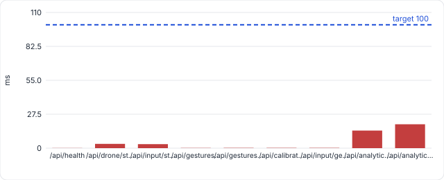
Finding
At 50 simultaneous clients (stress, not gated) the analytics endpoints dominate the tail: every request queues for the single sqlite connection. A single-operator desktop app never generates that load, but a short-lived cache on /analytics/summary would remove it.
| Detail | Value |
|---|---|
requests |
200 |
throughput_rps |
3038.5 |
error_count |
0 |
per_endpoint_p95_ms |
{"/api/health": 0.134, "/api/drone/status": 3.457, "/api/input/status": 3.365, "/api/gestures/status": 0.214, "/api/gestures/recognizer": 0.181, "/api/calibration/status": 0.222, "/api/input/gesture/events": 0.214, "/api/analytics/flights": 14.278, "/api/analytics/summary": 19.214} |
stress_test |
{"clients": 50, "gated": false, "stats": {"n": 1000, "min": 0.114, "mean": 11.315, "p50": 0.189, "p95": 62.99, "p99": 101.527, "max": 153.081}, "throughput_rps": 3367.6, "errors": 0, "per_endpoint_p95_ms": {"/api/health": 0.14, "/api/drone/status": 15.935, "/api/input/status": 16.487, "/api/gestures/status": 0.163, "/api/gestures/recognizer": 0.171, "/api/calibration/status": 0.204, "/api/input/ge… |
Recorded 2026-09-29T22:16:27+00:00 on Darwin arm64, 8 cores · commit a088db842f (local) · JSON · raw samples CSV · test source
QR-37¶
Command round trip p95 <= 100 ms · SRS NFR1.1 · tactic: Persistent WebSocket · PASS
| Metric | Target | Actual |
|---|---|---|
| p95 command round trip over /api/drone/ws/commands (ms) | <= 100.0 | 1.016 |
How it was measured. Send a command the way the on-screen pad does, wait for the backend ack after DroneAdapter.execute(). TAKEOFF and LAND also open/close a flight row in sqlite.
| n | min | mean | p50 | p95 | p99 | max |
|---|---|---|---|---|---|---|
| 202 | 0.136 | 0.301 | 0.176 | 1.016 | 1.681 | 3.511 |
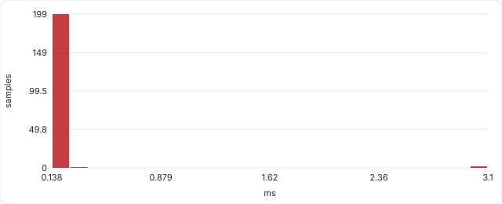
| Detail | Value |
|---|---|
commands |
202 |
Recorded 2026-09-29T22:16:43+00:00 on Darwin arm64, 8 cores · commit a088db842f (local) · JSON · raw samples CSV · test source
QR-38¶
Login p95 <= 1 s · SRS NFR1.1 · tactic: bcrypt cost 13 · PASS
| Metric | Target | Actual |
|---|---|---|
| p95 login response time (ms) | <= 1000.0 | 516.477 |
How it was measured. POST /api/auth/login with a registered user, 8 sequential logins timed end to end.
| n | min | mean | p50 | p95 | p99 | max |
|---|---|---|---|---|---|---|
| 8 | 469.225 | 493.042 | 493.669 | 516.477 | 516.477 | 516.477 |
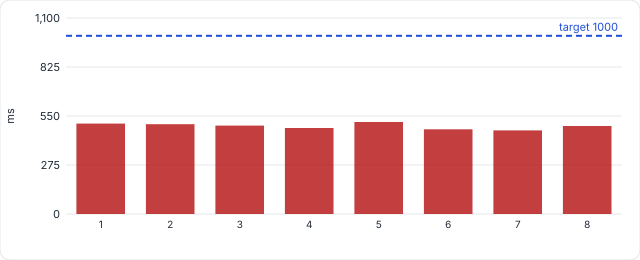
Finding
bcrypt.checkpw runs directly on the asyncio event loop, so while a login is verified every other request, telemetry tick and gesture broadcast waits. event_loop_stall_ms is the longest the loop was frozen during a login. Moving the hash into a worker thread (asyncio.to_thread) would remove it.
| Detail | Value |
|---|---|
event_loop_stall_ms |
522.7 |
Recorded 2026-09-29T22:16:49+00:00 on Darwin arm64, 8 cores · commit a088db842f (local) · JSON · raw samples CSV · test source
QR-40¶
Analytics query p95 <= 250 ms · SRS NFR1.1 · tactic: Aggregates in SQL · PASS
| Metric | Target | Actual |
|---|---|---|
| slowest analytics query p95 over 200 flights / 20000 rows (ms) | <= 250.0 | 3.545 |
How it was measured. The queries behind the Analytics page (summary stats, recent flights) and the aggregate run when a flight ends, against a seeded history.
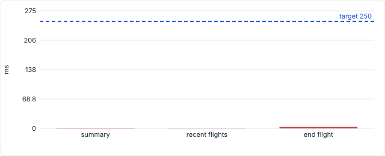
| Detail | Value |
|---|---|
per_query |
{"summary": {"n": 20, "min": 0.629, "mean": 0.724, "p50": 0.666, "p95": 0.736, "p99": 1.765, "max": 1.765}, "recent flights": {"n": 20, "min": 0.272, "mean": 0.314, "p50": 0.296, "p95": 0.38, "p99": 0.553, "max": 0.553}, "end flight": {"n": 5, "min": 2.453, "mean": 2.705, "p50": 2.483, "p95": 3.545, "p99": 3.545, "max": 3.545}} |
Recorded 2026-09-29T22:16:52+00:00 on Darwin arm64, 8 cores · commit a088db842f (local) · JSON · raw samples CSV · test source
QR-41¶
Cold start <= 10 s, first frame <= 3 s · SRS NFR1.1 · tactic: Lazy camera start · PASS
| Metric | Target | Actual |
|---|---|---|
| slowest backend cold start: process launch -> /api/health OK (s) | <= 10.0 s; first gesture frame <= 3.0 s | 1.33 |
How it was measured. uvicorn started as a new process (imports, DB create, seed) and polled every 50 ms, exactly what Electron waits for before opening the window. First gesture frame: GestureStream.subscribe() until the first payload arrives (MediaPipe init + first frame; physical webcam open time excluded).
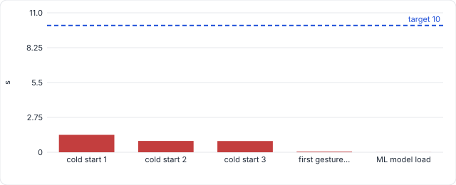
| Detail | Value |
|---|---|
cold_starts_s |
[1.33, 0.89, 0.91] |
first_gesture_frame_s |
0.05 |
ml_model_load_s |
0.004 |
Recorded 2026-09-29T22:17:37+00:00 on Darwin arm64, 8 cores · commit a088db842f (local) · JSON · raw samples CSV · test source
QR-51¶
Every screen LCP <= 2.5 s · SRS NFR1.1 · tactic: Static production bundle · PASS
| Metric | Target | Actual |
|---|---|---|
| slowest screen: largest contentful paint, cold start (ms) | LCP <= 2500, FCP <= 1800 on every screen | 812 |
How it was measured. Each screen opened in a vrand new browser process from the production build, as when the desktop app launches. FCP and LCP are read from the browsers own Paint timing and largest contentful paint apis
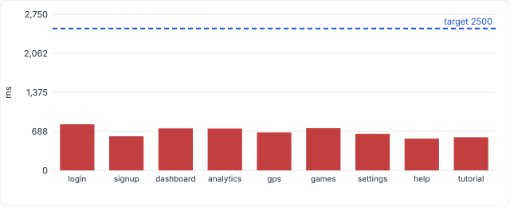
| Detail | Value |
|---|---|
worst_fcp_ms |
792 |
per_screen |
[{"route": "login", "fcp": 792, "lcp": 812, "dcl": 720, "kb": 1589}, {"route": "signup", "fcp": 584, "lcp": 600, "dcl": 538, "kb": 1589}, {"route": "dashboard", "fcp": 740, "lcp": 740, "dcl": 611, "kb": 383}, {"route": "analytics", "fcp": 736, "lcp": 736, "dcl": 630, "kb": 383}, {"route": "gps", "fcp": 668, "lcp": 668, "dcl": 569, "kb": 383}, {"route": "games", "fcp": 744, "lcp": 744, "dcl": 642, … |
Recorded 2026-09-29T01:36:06+00:00 on Darwin arm64, 8 cores, Chromium 149.0.7827.55 · commit f63bc74b70 (local) · JSON · raw samples CSV · test source
QR-52¶
Click -> command confirmed <= 200 ms · SRS NFR1.1 · tactic: WS ack + history · PASS
| Metric | Target | Actual |
|---|---|---|
| p95 click -> command shown in Command History (ms) | <= 200, every click confirmed | 53.7 |
How it was measured. Clocks the on screen take off,D pad and land buttons. Time from the click event to the command appearing in Command History, i.e. UI ->. command WebSocket -> re-render
| n | min | mean | p50 | p95 | p99 | max |
|---|---|---|---|---|---|---|
| 22 | 52 | 53.28 | 53.3 | 53.7 | 54.6 | 54.6 |
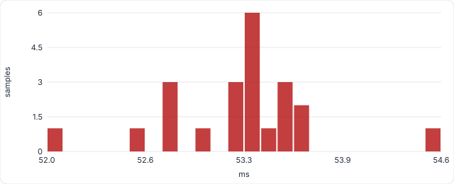
| Detail | Value |
|---|---|
clicks |
22 |
unconfirmed_clicks |
0 |
Recorded 2026-09-29T01:36:15+00:00 on Darwin arm64, 8 cores, Chromium 149.0.7827.55 · commit f63bc74b70 (local) · JSON · raw samples CSV · test source
QR-18¶
Pipeline stays bounded under load · SRS NFR1.2 · tactic: Drop-oldest frame queue · PASS
| Metric | Target | Actual |
|---|---|---|
| max queue depth under sustained load | <= 2 | 2 |
| Detail | Value |
|---|---|
pushes |
100 |
drop_count |
98 |
expected_drops |
98 |
Recorded 2026-09-29T22:17:33+00:00 on Darwin arm64, 8 cores · commit a088db842f (local) · JSON · test source
QR-32¶
CPU <= 70 % at 30 fps · SRS NFR1.2 · tactic: Lite model, JPEG once · PASS
| Metric | Target | Actual |
|---|---|---|
| whole-process CPU at 30 fps with 11 clients (% of machine) | <= 70.0 | 6.7 |
How it was measured. time.process_time() over the steady-state window: every thread of the backend process (camera, MediaPipe, event loop). Divided by wall time and core count.
| Detail | Value |
|---|---|
single_core_equivalent_pct |
53.4 |
window_s |
30.0 |
Recorded 2026-09-29T22:17:33+00:00 on Darwin arm64, 8 cores · commit a088db842f (local) · JSON · test source
QR-33¶
Frames dropped <= 1 % at 30 fps · SRS NFR1.2 · tactic: Consumer keeps pace · PASS
| Metric | Target | Actual |
|---|---|---|
| frames dropped by the bounded queue at 30 fps (%) | <= 1.0 | 0.0 |
How it was measured. Frames the camera delivered vs frames the consumer processed in the window. The queue drops the oldest frame when the consumer falls behind (QR-18), so any shortfall here is lost frames.
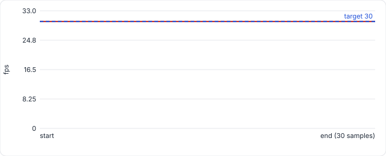
| Detail | Value |
|---|---|
captured |
900 |
processed |
900 |
effective_fps |
30.0 |
Recorded 2026-09-29T22:17:33+00:00 on Darwin arm64, 8 cores · commit a088db842f (local) · JSON · raw samples CSV · test source
QR-42¶
No per-frame memory growth · SRS NFR1.2 · tactic: Bounded buffers · PASS
| Metric | Target | Actual |
|---|---|---|
| Python heap growth over 4000 frames after warm-up (KB) | <= 1024 | 27.6 |
How it was measured. tracemalloc over the per-frame path: ML recognition, stabilizer, JPEG serialization, GestureAdapter and the gesture history log. A leak of even one small object per frame would show as steady growth.
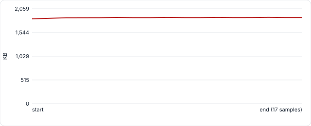
| Detail | Value |
|---|---|
heap_kb |
{"n": 17, "min": 1839.7, "mean": 1864.5, "p50": 1866.1, "p95": 1870.7, "p99": 1871.7, "max": 1871.7} |
commands_emitted |
4291 |
Recorded 2026-09-29T22:17:53+00:00 on Darwin arm64, 8 cores · commit a088db842f (local) · JSON · raw samples CSV · test source
QR-34¶
Every client >= 24 fps (+1 stalled) · SRS NFR1.3 · tactic: Per-client 1-slot queues · PASS
| Metric | Target | Actual |
|---|---|---|
| lowest frame rate received by any of 10 clients, 1 stalled client present | >= 24.0 | 30.0 |
How it was measured. Ten subscribers read the live GestureStream while an eleventh never reads. Each client has its own 1-slot drop-oldest queue, so the stalled one must not slow the others. The browser-side render rate is QR-48.
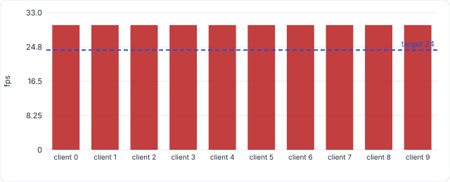
| Detail | Value |
|---|---|
per_client_fps |
{"client 0": 30.0, "client 1": 30.0, "client 2": 30.0, "client 3": 30.0, "client 4": 30.0, "client 5": 30.0, "client 6": 30.0, "client 7": 30.0, "client 8": 30.0, "client 9": 30.0} |
capture_to_client_ms |
{"n": 9000, "min": 13.254, "mean": 15.306, "p50": 15.291, "p95": 15.874, "p99": 16.303, "max": 21.117} |
Recorded 2026-09-29T22:17:33+00:00 on Darwin arm64, 8 cores · commit a088db842f (local) · JSON · raw samples CSV · test source
QR-36¶
Telemetry >= 9 Hz · SRS NFR1.3 · tactic: 100 ms push loop · PASS
| Metric | Target | Actual |
|---|---|---|
| telemetry updates pushed per second during a recorded flight (Hz) | >= 9.0 Hz, p95 gap <= 150.0 ms | 9.79 |
How it was measured. Dummy drone connected, TAKEOFF sent so a flight is being recorded (every 10th tick also writes a telemetry row to sqlite), then 150 consecutive telemetry messages timed on the client side. Design rate is 10 Hz.
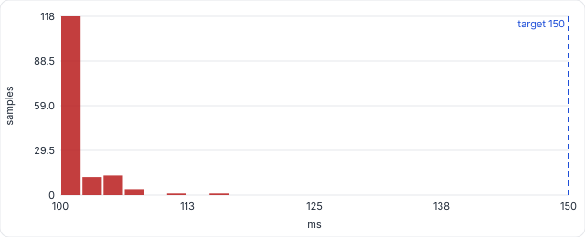
| Detail | Value |
|---|---|
gap_stats_ms |
{"n": 149, "min": 100.076, "mean": 102.142, "p50": 101.585, "p95": 105.68, "p99": 106.637, "max": 107.497} |
messages |
150 |
Recorded 2026-09-29T22:16:43+00:00 on Darwin arm64, 8 cores · commit a088db842f (local) · JSON · raw samples CSV · test source
QR-39¶
Telemetry write p95 <= 50 ms · SRS NFR1.3 · tactic: Write every 10th tick · PASS
| Metric | Target | Actual |
|---|---|---|
| p95 telemetry row write, with 20k rows of history (ms) | <= 50.0 | 0.861 |
How it was measured. FlightManager.record_telemetry (new session, insert, commit) on the real sqlite file, the call the telemetry WebSocket makes every 10th 100 ms tick. Must stay far below 100 ms or the live telemetry stream stutters.
| n | min | mean | p50 | p95 | p99 | max |
|---|---|---|---|---|---|---|
| 200 | 0.631 | 0.732 | 0.691 | 0.861 | 1.936 | 2.453 |
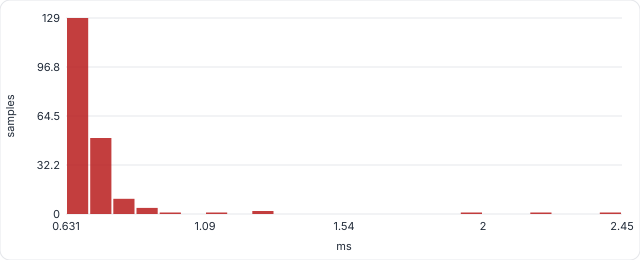
| Detail | Value |
|---|---|
history_rows |
20000 |
Recorded 2026-09-29T22:16:52+00:00 on Darwin arm64, 8 cores · commit a088db842f (local) · JSON · raw samples CSV · test source
QR-50¶
Dashboard renders >= 24 fps · SRS NFR1.3 · tactic: Canvas + ImageBitmap · PASS
| Metric | Target | Actual |
|---|---|---|
| dashboard live-feed frames painted per second (fps) | >= 24 fps and >= 99% of received frames painted | 30 |
How it was measured. The real dashboard receives 30 fps GestureFramePayload messages (real 640x480 JPEG frames + hand landmarks) over the gesture WebSocket. Every canvas drawImage of a frame is counted, and every message is timestamped as it reaches page. Painted $ = frames painted / frames recieved in the same window.
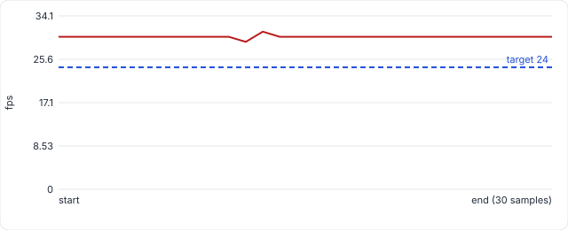
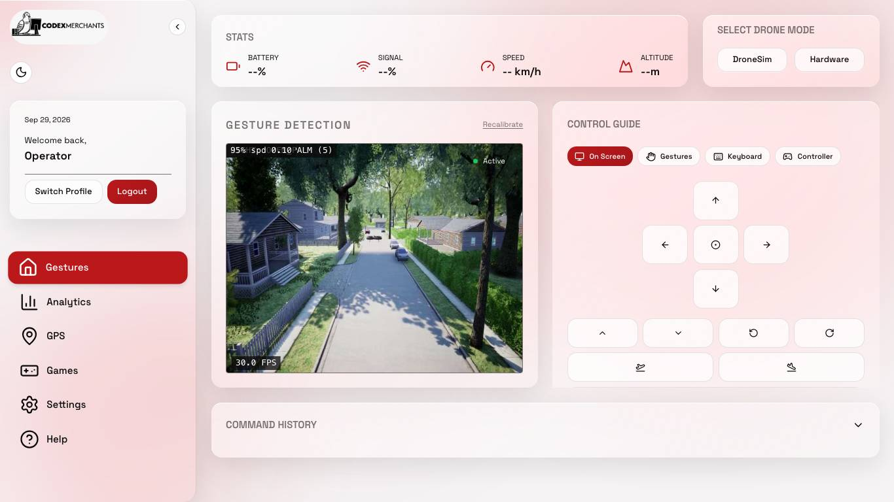
| Detail | Value |
|---|---|
window_s |
30 |
frames_sent |
901 |
frames_received |
901 |
arrival_gap_ms |
{"n": 900, "min": 3.8, "mean": 33.33, "p50": 33.3, "p95": 35.4, "p99": 36.6, "max": 63.7} |
back_to_back_arrivals |
1 |
frames_painted |
900 |
painted_pct |
99.89 |
frame_gap_ms |
{"n": 899, "min": 3.2, "mean": 33.33, "p50": 33.3, "p95": 35.6, "p99": 37.1, "max": 65.5} |
long_tasks |
{"count": 1, "worst_ms": 67} |
Recorded 2026-09-29T01:35:42+00:00 on Darwin arm64, 8 cores, Chromium 149.0.7827.55 · commit f63bc74b70 (local) · JSON · raw samples CSV · test source
NFR2 Security¶
QR-07¶
Session token <= 30 min · SRS NFR2.1 · tactic: Short-lived JWT · PASS
| Metric | Target | Actual |
|---|---|---|
| access-token lifetime (minutes) | <= 30 | 15 |
Recorded 2026-09-29T22:17:54+00:00 on Darwin arm64, 8 cores · commit a088db842f (local) · JSON · test source
QR-12¶
Invalid tokens rejected · SRS NFR2.1 · tactic: JWT exp/aud/iss/sig checks · PASS
| Metric | Target | Actual |
|---|---|---|
| invalid access tokens rejected | all rejected | 5/5 |
Recorded 2026-09-29T22:17:54+00:00 on Darwin arm64, 8 cores · commit a088db842f (local) · JSON · test source
QR-08¶
Password hash cost >= 12 rounds · SRS NFR2.2 · tactic: Configurable bcrypt rounds · PASS
| Metric | Target | Actual |
|---|---|---|
| bcrypt cost factor (rounds) | >= 12 | 13 |
| Detail | Value |
|---|---|
hash_time_ms |
491.79 |
Recorded 2026-09-29T22:16:56+00:00 on Darwin arm64, 8 cores · commit a088db842f (local) · JSON · test source
QR-09¶
Weak passwords rejected · SRS NFR2.2 · tactic: Strength policy regexes · PASS
| Metric | Target | Actual |
|---|---|---|
| weak password rejected by strength policy | all rejected | 5/5 |
| Detail | Value |
|---|---|
strong_password_accepted |
True |
Recorded 2026-09-29T22:16:57+00:00 on Darwin arm64, 8 cores · commit a088db842f (local) · JSON · test source
QR-10¶
Password hashes salted · SRS NFR2.2 · tactic: bcrypt gensalt · PASS
| Metric | Target | Actual |
|---|---|---|
| identical passwords produce distinct digests | distinct | distinct |
| Detail | Value |
|---|---|
both_verify |
True |
Recorded 2026-09-29T22:16:59+00:00 on Darwin arm64, 8 cores · commit a088db842f (local) · JSON · test source
NFR3 Reliability¶
QR-01¶
Gesture accuracy >= 95% (ML) · SRS NFR3.1 · tactic: ML recognizer (MLP) · PASS
| Metric | Target | Actual |
|---|---|---|
| gesture classification accuracy (%) | >= 95.0 | 99.71 |
| Detail | Value |
|---|---|
engine |
ml |
samples |
5837 |
top_confusions |
[["TWO_FINGERS->THREE_FINGERS", 3], ["FIST->ONE_FINGER", 2], ["TWO_FINGERS->ONE_FINGER", 2], ["THREE_FINGERS->TWO_FINGERS", 2], ["FIST->TWO_FINGERS", 1]] |
Recorded 2026-09-29T22:16:26+00:00 on Darwin arm64, 8 cores · commit a088db842f (local) · JSON · test source
QR-02¶
Every gesture >= 95% (ML) · SRS NFR3.1 · tactic: ML recognizer (MLP) · PASS
| Metric | Target | Actual |
|---|---|---|
| lowest per-gesture accuracy (%) | >= 95.0 | 99.0 |
| Detail | Value |
|---|---|
engine |
ml |
per_gesture |
{"FIST": 99.0, "OPEN_PALM": 100.0, "ONE_FINGER": 99.9, "TWO_FINGERS": 99.5, "THREE_FINGERS": 99.7, "FOUR_FINGERS": 99.8} |
Recorded 2026-09-29T22:16:26+00:00 on Darwin arm64, 8 cores · commit a088db842f (local) · JSON · test source
QR-01-rule¶
Rule-based accuracy (informational) · SRS NFR3.1 · tactic: Rule-based ceiling · INFO
| Metric | Target | Actual |
|---|---|---|
| rule-based accuracy, informational (%) | informational (ML is the gated engine) | 55.9 |
| Detail | Value |
|---|---|
engine |
rule |
lowest_per_gesture |
37.5 |
per_gesture |
{"FIST": 56.4, "OPEN_PALM": 98.3, "ONE_FINGER": 37.5, "TWO_FINGERS": 52.3, "THREE_FINGERS": 65.8, "FOUR_FINGERS": 61.5} |
Recorded 2026-09-29T22:16:26+00:00 on Darwin arm64, 8 cores · commit a088db842f (local) · JSON · test source
QR-06¶
Confidence gate >= 0.85 · SRS NFR3.2 · tactic: MIN_CONFIDENCE filter · PASS
| Metric | Target | Actual |
|---|---|---|
| minimum confidence threshold for command emission | >= 0.85 | 0.85 |
Recorded 2026-09-29T22:16:52+00:00 on Darwin arm64, 8 cores · commit a088db842f (local) · JSON · test source
QR-19¶
Single-frame noise suppressed · SRS NFR3.2 · tactic: GestureStabilizer voting · PASS
| Metric | Target | Actual |
|---|---|---|
| single-frame noise suppressed by stabilizer | rejected | rejected |
| Detail | Value |
|---|---|
switches_on_sustained_hold |
True |
window |
5 |
min_agreement |
3 |
Recorded 2026-09-29T22:17:33+00:00 on Darwin arm64, 8 cores · commit a088db842f (local) · JSON · test source
QR-04¶
All single-hand gestures mapped · SRS NFR3.2 · tactic: SINGLE_HAND_MAP · PASS
| Metric | Target | Actual |
|---|---|---|
| single-hand gestures resloving to command | all mapped | 3/3 |
| Detail | Value |
|---|---|
mapped |
{"OPEN_PALM": "HOVER", "ONE_FINGER": "MOVE_UP", "TWO_FINGERS": "MOVE_DOWN"} |
Recorded 2026-09-29T22:16:52+00:00 on Darwin arm64, 8 cores · commit a088db842f (local) · JSON · test source
QR-05¶
All two-hand combos resolve · SRS NFR3.2 · tactic: Two-hand maps + _resolve · PASS
| Metric | Target | Actual |
|---|---|---|
| two-hand combinations resolving correctly | all resolve | 9/9 |
Recorded 2026-09-29T22:16:52+00:00 on Darwin arm64, 8 cores · commit a088db842f (local) · JSON · test source
QR-13¶
E-stop always critical priority · SRS NFR3.3 · tactic: Command priority elevation · PASS
| Metric | Target | Actual |
|---|---|---|
| EMERGENCY_STOP priority after contruction | == 999 | 999 |
Recorded 2026-09-29T22:17:54+00:00 on Darwin arm64, 8 cores · commit a088db842f (local) · JSON · test source
QR-14¶
E-stop grounds the drone · SRS NFR3.3 · tactic: Adapter emergency_stop · PASS
| Metric | Target | Actual |
|---|---|---|
| is_flying after emergency stop | grounded | grounded |
Recorded 2026-09-29T22:17:54+00:00 on Darwin arm64, 8 cores · commit a088db842f (local) · JSON · test source
NFR5 Usability¶
QR-44¶
Predicted first flight <= 5 min (KLM) · SRS NFR5.1 · tactic: Keystroke-Level Model · PASS
| Metric | Target | Actual |
|---|---|---|
| KLM-predicted time from opening the app to completing the basic flight (s) | <= 300.0 | 219.8 |
How it was measured. Keystroke-Level Model (Card, Moran & Newell): K=0.28, P=1.10, B=0.10, H=0.40, M=1.35 s. Form fields, tutorial clip lengths, calibration sequence and window are read from the product itself; system response times come from this run. An error-free prediction: a feasibility check, confirmed or refuted by QR-45.
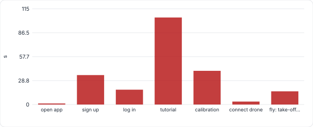
Finding
Feasible, but tight: 203.9 s of the 300 s budget goes on sign-up, log-in, the full tutorial and calibration before the first take-off. With a x2 allowance for a first-time user the estimate is 439.6 s, over the limit, so the real-participant timing (QR-45) is the deciding evidence. Shortening the path (skippable tutorial steps, calibration offered after the first flight) would add margin.
| Detail | Value |
|---|---|
phases_s |
{"open app": 1.3, "sign up": 35.5, "log in": 17.9, "tutorial": 104.9, "calibration": 40.6, "connect drone": 3.6, "fly: take-off, hover, move, land": 15.9} |
onboarding_before_takeoff_s |
203.9 |
with_x2_novice_allowance_s |
439.6 |
tutorial_steps |
12 |
tutorial_video_s |
55.6 |
calibration_gestures |
6 |
inputs |
{"login": "QR-38 measured", "gesture onset": "QR-30 measured", "cold start": "QR-41 measured"} |
Recorded 2026-09-29T22:17:55+00:00 on Darwin arm64, 8 cores · commit a088db842f (local) · JSON · raw samples CSV · test source
QR-45¶
>= 80% fly within 5 min (study) · SRS NFR5.1 · tactic: Moderated usability study · PENDING
| Metric | Target | Actual |
|---|---|---|
| participants completing the basic flight within 5 minutes (%) | >= 80.0% of >= 5 external participants | 0/5 participants logged |
How it was measured. Awaiting the usability study; see docs/nfr/usability/PROTOCOL.md.
Recorded 2026-09-29T22:17:55+00:00 on Darwin arm64, 8 cores · commit a088db842f (local) · JSON · test source
QR-56¶
Basic flight <= 6 confirmed clicks · SRS NFR5.1 · tactic: On-screen flight pad · PASS
| Metric | Target | Actual |
|---|---|---|
| clicks to complete take-off, hover, move, land on screen | <= 6 clicks, each confirmed within 1 s, drone landed | 5 |
How it was measured. Scripted walk-through of the basic flight on the on-screen pad. Counts interactions and checks each one is confirmed on screen (Command History) within 1 s. The human time for the same task comes from the usability study (QR-45).
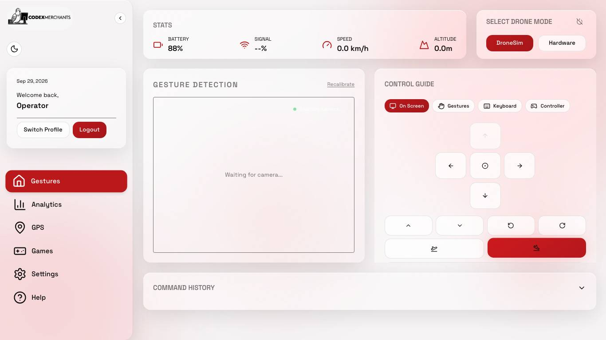
| Detail | Value |
|---|---|
steps |
[{"action": "choose drone mode", "confirmed": true}, {"action": "take off", "confirmed": true}, {"action": "hover", "confirmed": true}, {"action": "move forward", "confirmed": true}, {"action": "land", "confirmed": true}] |
automated_run_s |
1.1 |
drone_landed |
True |
Recorded 2026-09-29T01:36:48+00:00 on Darwin arm64, 8 cores, Chromium 149.0.7827.55 · commit f63bc74b70 (local) · JSON · test source
QR-46¶
Mean SUS >= 85, >= 5 external users · SRS NFR5.2 · tactic: System Usability Scale · PENDING
| Metric | Target | Actual |
|---|---|---|
| mean System Usability Scale score (0-100) | >= 85.0 with >= 5 external participants | 0/5 participants logged |
How it was measured. Awaiting the usability study; see docs/nfr/usability/PROTOCOL.md.
Recorded 2026-09-29T22:17:55+00:00 on Darwin arm64, 8 cores · commit a088db842f (local) · JSON · test source
QR-55¶
Gesture + command visible, no scrolling · SRS R1.1.2 · tactic: Dashboard layout · PASS
| Metric | Target | Actual |
|---|---|---|
| screen sizes showing gesture AND mapped command without scrolling | 3/3, no sideways scrolling at 1024 px | 3/3 |
How it was measured. Dashboard rendered at common laptop resolutions with a live gesture stream. The gesture overlay (camera feed) must be at least half on screen and the Command History heading, where the mapped command appears, fully on screen, with no scrolling. Every screen is also checked for horizontal overflow at 1024x768.
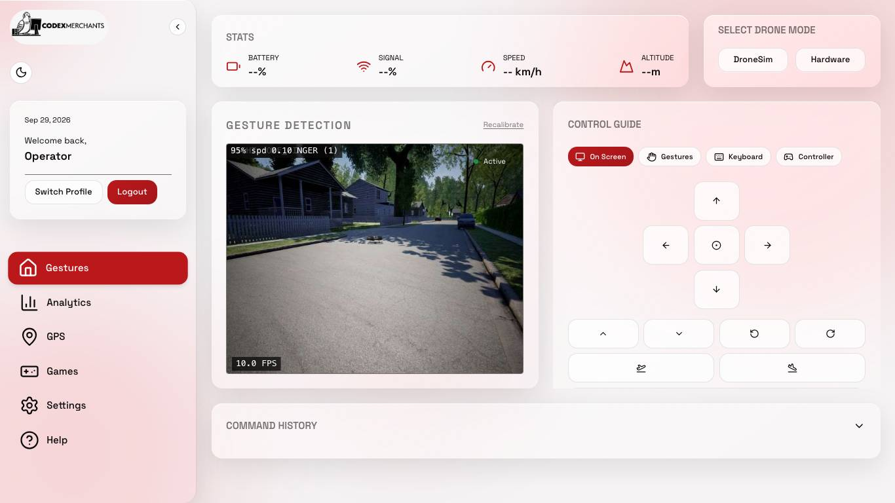
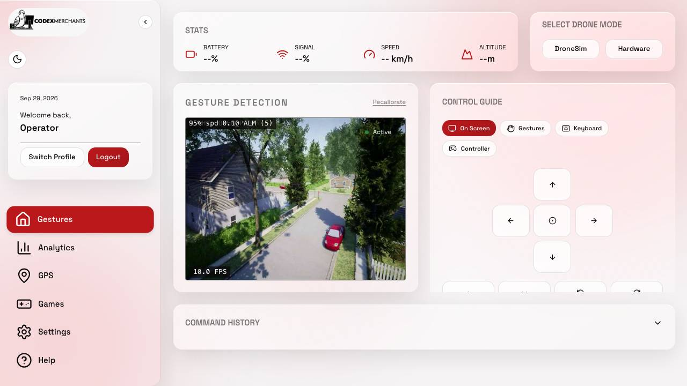
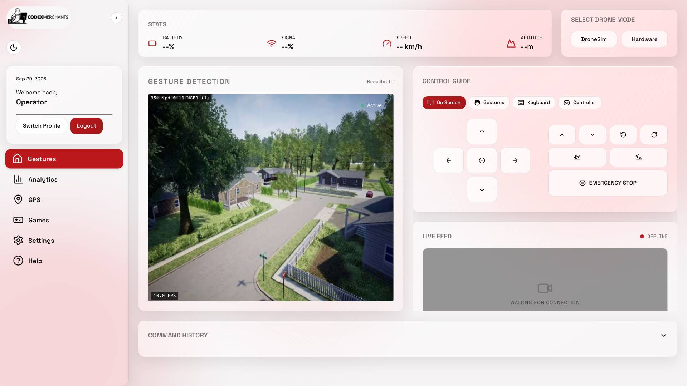
| Detail | Value |
|---|---|
per_viewport |
{"1366x768": {"gesture_feed_visible": 1, "command_history_top_px": 638, "command_history_visible": true, "emergency_stop_visible": true, "viewport_height": 768}, "1280x720": {"gesture_feed_visible": 1, "command_history_top_px": 590, "command_history_visible": true, "emergency_stop_visible": true, "viewport_height": 720}, "1920x1080": {"gesture_feed_visible": 1, "command_history_top_px": 924, "comm… |
Recorded 2026-09-29T01:36:45+00:00 on Darwin arm64, 8 cores, Chromium 149.0.7827.55 · commit f63bc74b70 (local) · JSON · test source
QR-49¶
One history entry per held gesture · SRS R1.1.2 · tactic: Transition-only event log · PASS
| Metric | Target | Actual |
|---|---|---|
| command-history entries for 2 holds (10 s + 3 s, with a dropout) | 2 (one per hold) | 2 |
How it was measured. Feeds 392 frames through the real GestureAdapter: the drone still receives a command every frame, but the operator-facing history must show one row per hold.
| Detail | Value |
|---|---|
history |
["MOVE_UP", "HOVER"] |
frames |
392 |
commands_sent_to_drone |
387 |
Recorded 2026-09-29T22:17:55+00:00 on Darwin arm64, 8 cores · commit a088db842f (local) · JSON · test source
QR-48¶
Keyboard + gamepad reach every command · SRS R7 / US-A-02 · tactic: Shared Command vocabulary · PASS
| Metric | Target | Actual |
|---|---|---|
| gesture commands also reachable from keyboard and gamepad | all, including EMERGENCY_STOP | keyboard 12/12, gamepad 12/12 |
How it was measured. Compares the real mapping tables of GestureAdapter, KeyboardAdapter and GamepadAdapter.
Finding
Only 3 of 12 commands work with a single hand (HOVER, MOVE_DOWN, MOVE_UP); take-off and land need both hands. US-A-01 and the U3 description in SRS 3.1.2.4 expect full one-handed gesture control, so a one-handed operator relies on keyboard or gamepad (which this row confirms).
| Detail | Value |
|---|---|
missing |
{"keyboard": [], "gamepad": []} |
one_handed_gesture_commands |
["HOVER", "MOVE_DOWN", "MOVE_UP"] |
Recorded 2026-09-29T22:17:55+00:00 on Darwin arm64, 8 cores · commit a088db842f (local) · JSON · test source
QR-53¶
Every control has an accessible name · SRS U3 / WCAG 4.1.2 · tactic: Labelled controls · PASS
| Metric | Target | Actual |
|---|---|---|
| controls and images with an accessible name (%) | 100 | 100 |
How it was measured. Reads Chromium's own accessibility tree (what a screen reader or voice-control user gets) on every screen and counts buttons, links, inputs, tabs and images with no name.
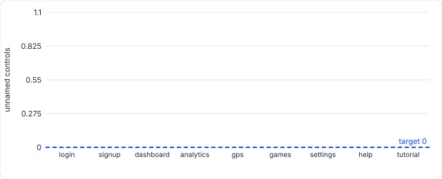
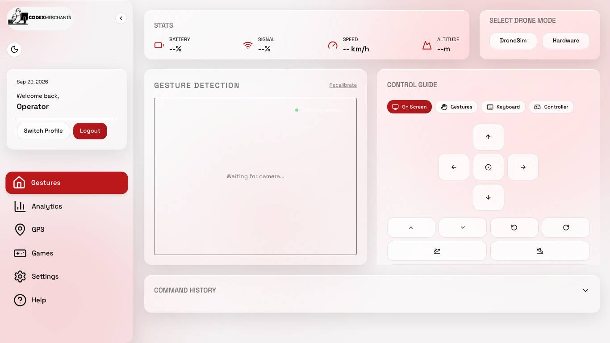
| Detail | Value |
|---|---|
controls |
147 |
unnamed_controls |
0 |
per_screen |
{"login": {"total": 8, "unnamed": 0, "examples": []}, "signup": {"total": 11, "unnamed": 0, "examples": []}, "dashboard": {"total": 31, "unnamed": 0, "examples": []}, "analytics": {"total": 11, "unnamed": 0, "examples": []}, "gps": {"total": 15, "unnamed": 0, "examples": []}, "games": {"total": 18, "unnamed": 0, "examples": []}, "settings": {"total": 14, "unnamed": 0, "examples": []}, "help": {"to… |
Recorded 2026-09-29T01:36:28+00:00 on Darwin arm64, 8 cores, Chromium 149.0.7827.55 · commit f63bc74b70 (local) · JSON · raw samples CSV · test source
QR-54¶
Keyboard focus always visible · SRS U3 / WCAG 2.4.7 · tactic: Focus styles · PASS
| Metric | Target | Actual |
|---|---|---|
| keyboard tab stops with a visible focus indicator (%) | 100 | 100 |
How it was measured. Presses Tab through the login screen and the dashboard. At each stop the element's outline, box-shadow, border, background and text colour are compared focused vs unfocused; no difference means a keyboard user cannot see where they are.
| Detail | Value |
|---|---|
tab_stops |
28 |
per_screen |
{"login": {"stops": 8, "invisible": []}, "dashboard": {"stops": 20, "invisible": []}} |
Recorded 2026-09-29T01:36:32+00:00 on Darwin arm64, 8 cores, Chromium 149.0.7827.55 · commit f63bc74b70 (local) · JSON · test source
NFR6 Maintainability¶
QR-20¶
Drone adapters implement interface · SRS NFR6.1 · tactic: DroneAdapter ABC · PASS
| Metric | Target | Actual |
|---|---|---|
| DroneAdapter adapters fully implementing the interface | all loaded adapters complete | 4/4 loaded |
| Detail | Value |
|---|---|
interface_methods |
["analog", "connect", "disconnect", "emergency_stop", "get_telemetry", "hover", "land", "move", "takeoff"] |
Recorded 2026-09-29T22:16:56+00:00 on Darwin arm64, 8 cores · commit a088db842f (local) · JSON · test source
QR-21¶
Input adapters implement interface · SRS NFR6.1 · tactic: InputAdapter ABC · PASS
| Metric | Target | Actual |
|---|---|---|
| InputAdapter adapters fully implementing the interface | all loaded adapters complete | 4/4 loaded |
| Detail | Value |
|---|---|
interface_methods |
["handle_message", "start"] |
Recorded 2026-09-29T22:16:56+00:00 on Darwin arm64, 8 cores · commit a088db842f (local) · JSON · test source
QR-22¶
No function above complexity 15 · SRS NFR6.2 · tactic: Small functions · MISSING
Not measured in the committed run. Test: test_maintainabiility.py.
NFR7 Availability¶
QR-23¶
Every subsystem has a liveness probe · SRS NFR7.1 · tactic: /health per router · PASS
| Metric | Target | Actual |
|---|---|---|
| subsystems exposing a liveness probe | all present | 4/4 |
| Detail | Value |
|---|---|
health_routes |
["/api/auth/health", "/api/drone/health", "/api/gestures/health", "/api/health"] |
Recorded 2026-09-29T22:16:27+00:00 on Darwin arm64, 8 cores · commit a088db842f (local) · JSON · test source
QR-24¶
Health probes need no auth · SRS NFR7.2 · tactic: Open health routes · PASS
| Metric | Target | Actual |
|---|---|---|
| health probes reachable without authentication | all unauthenticated | 4/4 |
Recorded 2026-09-29T22:16:27+00:00 on Darwin arm64, 8 cores · commit a088db842f (local) · JSON · test source